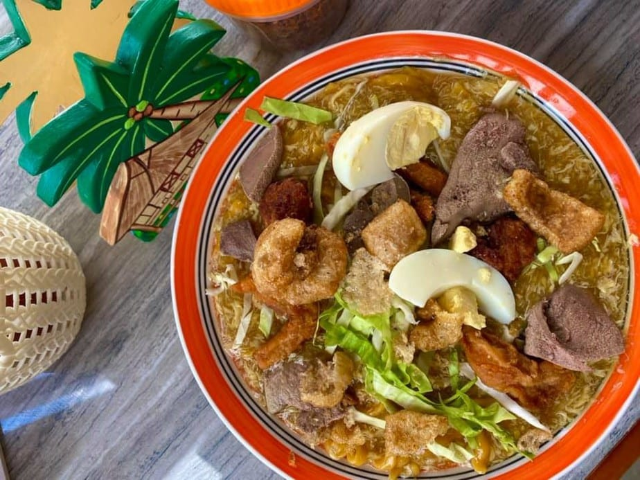
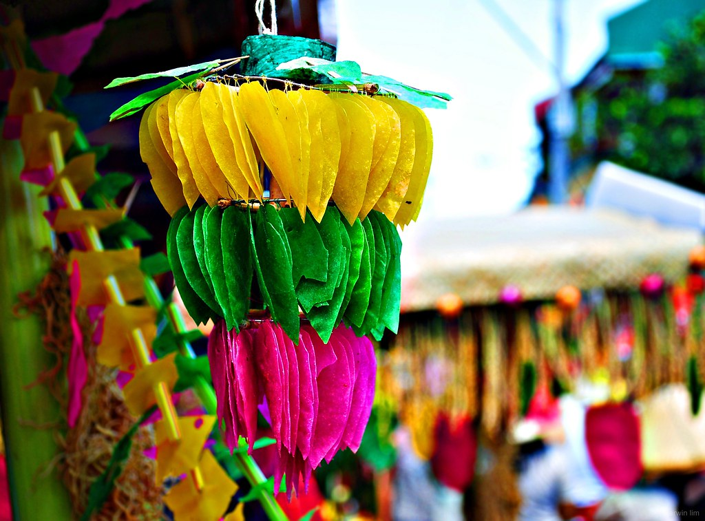

Welcome to CALABARZON, a region in the Philippines bursting with natural wonders, historical sites, and vibrant culture. Whether you're seeking serene beaches, picturesque mountains, or immersive cultural experiences, CALABARZON has something for every traveler.
The best time to visit CALABARZON is during the dry season, which typically spans from November to April. During these months, you can enjoy sunny weather and ideal conditions for outdoor activities such as hiking, beach hopping, and exploring heritage sites. Keep in mind that the region experiences a tropical climate, so expect occasional rainfall even during the dry season.
Best place to visit
Tagaytay City
Known for its stunning views of Taal Volcano and Taal Lake, Tagaytay City offers a refreshing escape from the hustle and bustle of Manila. Enjoy cool weather, indulge in delicious local cuisine, and visit attractions like Picnic Grove, Sky Ranch, and the Tagaytay Ridge Zipline and Cable Car.
Where to See and Do in CALABARZON
Discover Anilao's Underwater World
Dive or snorkel in Anilao, Batangas, known as the "birthplace of scuba diving in the Philippines." Marvel at the colorful coral reefs and diverse marine life, including vibrant fish and fascinating critters.
Visit Pagsanjan Falls
Take a thrilling boat ride through the narrow canyon of Pagsanjan Gorge to reach the majestic Pagsanjan Falls in Laguna. Experience the adrenaline rush as your guide navigates the rapids, culminating in a breathtaking view of the waterfall.
Hike to Mount Daraitan
Embark on an adventure to Mount Daraitan in Rizal Province. Trek through lush forests, cross rivers, and climb limestone formations to reach the summit, where you'll be rewarded with stunning views of the Sierra Madre mountain range.
Experience Pahiyas Festival
Join the colorful festivities of Pahiyas Festival in Lucban, Quezon Province. Marvel at the intricately decorated houses adorned with fruits, vegetables, and agricultural products, and immerse yourself in the lively street celebrations.
Batangas Beach Hopping
Explore the beautiful beaches of Batangas, such as Laiya, Nasugbu, and Matabungkay. Relax on white sand shores, swim in crystal-clear waters, and savor fresh seafood dishes by the beach.
Foods
1. Batangas Lomi
Batangas Lomi is a thick and hearty noodle soup made with fresh egg noodles, pork, chicken, liver, shrimp, and an assortment of vegetables. It is a popular comfort food in the Batangas province of the Calabarzon region. Just by looking at a serving of lomi would make you feel like you’re already full. So better prepare with an empty stomach when you go to Batangas for its lomi.

2. Quezon Pancit Habhab
Pancit Habhab, also known as Pancit Lucban, is a noodle dish made with miki noodles (thick, flour-based noodles), sautéed with pork, shrimp, and vegetables. It is a specialty of Lucban, Quezon.

3. Batangas Bulalo
Similar to the Bulalo from Central Luzon, this version from Batangas features beef shank and marrow bones simmered for hours to create a rich and flavorful broth, served with corn and leafy vegetables.

4. Quezon's Kiping
Kiping is a colorful, wafer-thin, and translucent rice cracker made from ground glutinous rice. It is deep-fried and typically served with a sweet sauce during the Pahiyas Festival in Lucban, Quezon.

5. Batangas' Adobong Dilaw
Adobong Dilaw, also known as Yellow Adobo, is a variation of the classic Filipino adobo that uses turmeric for a distinct yellow color and flavor. This dish is popular in the province of Batangas.